Clinical Analysis Reporting and Visualization Ensemble in R (carver)
2025-03-12
Source:vignettes/carver.Rmd
carver.Rmd1. Overview
carver application helps to explore data visually and makes it easier to identify interesting data patterns.
By uploading data locally or can use default CDISC data, user can explore relevant tables, listings, and figures by giving their own inputs, thus interacting with the data and the analysis.
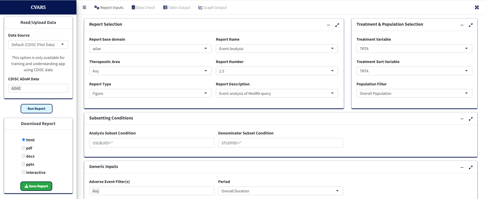
This is the look and feel of the carver application initially when
one loads the app. Now that the app is ready to use, the user needs to
feed in the data for which the report and graphs are visualized. There
are 4 tabs in the main window: Report Inputs to give inputs
for reports, Data Check to view the reported values for the
selected variable, Graph Output to display any graph
generated, and Table Output to display any table
generated.
1.1 Data Import
Data can be uploaded from Local location. The file can only be of “.csv”, “.sas7bdat”, “.xpt” and “.Rda” format and must follow the naming convention of “adXX” where “XX” is the domain code. For example, “adae.sas7bdat” and “adae.xpt” are valid whereas “adae_s1.sas7bdat” or “adae2.sas7bdat” are not valid. In the Data Source panel, you can see the following options: Default and Local.
1.1.1 Default CDISC data
This option provides an opportunity to work with the built-in dataset
in the carver application. Default option includes ADSL and ADAE
dataset. For example, to start working with “ADSL” dataset, choose
“ADSL” from CDISC ADaM Data dropdown and then click on
“Read Data”.
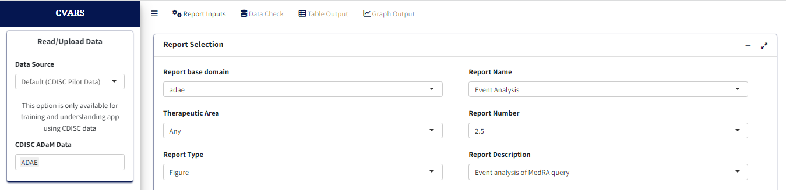
Before process or create a report, click on “Report Inputs” tab. This step provides available options to create or process a report.
2. Reports
Once the data has been read, the app processes the domain name and allows you to choose the corresponding reports available for those domains.
Note: Before proceeding to this section, it is
highly recommended to review sections 1.1 Data Import and
1.1.1 Default CDISC data for further details about giving
report inputs.
2.1 Volcano and Forest
Once ADAE data is uploaded, user will have drop-down
with Volcano and Forest reports available. Both Volcano and Forest
reports yield a Graph Output and a Table Output (common to both, more
later)
Data import, Report Selection and Treatment variable Selection
2.1.1 Volcano Plot
This section presents detailed the steps for creating Volcano Plot
using carver application which is a graph report. The required input
ADaM data for this is an ADAE dataset. Upon
loading/selecting ADAE data and clicking the Report Inputs
tab, report inputs can be added.
- Report Type as
Figureand Report Name asVolcano Plotfor the graph
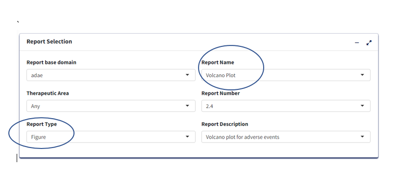
Treatment/Population
Required
Under Treatment and Population Selection, select appropriate
Treatment Variable:
For table, Treatment Variable determines the columns and for Figure, determines how to differentiate groups by color.Select appropriate
Treatment Sort Variablewhich will give the order for sorting Treatment variable.To subset entire data based on population flags, select
Population Filter. eg. Overall, Safety (SAFFL).

Processing Data:
- Add or Edit the default
Analysis Subset ConditionandDenominator Subset Conditionto filter input data (for calculating categorical counts alone or for entire data respectively)

Select
Adverse Event Filter(s)- To filter input dataSelect
Period- To generate the figure by eitherOverall DurationorOther.Select
Summary By- It helps to select eitherParticipantsif the plot is to based on subject count orEventsif the plot is to based on AE counts.Select
Lower Level Event Term- This variable will help to generate the figure by AEBODSYS or FMQ Name etc., It is a type of scatterplot that shows statistical significance (P-value) versus magnitude of change (fold change).Select
Lower Level Event Term- This variable will help to generate the figure by AEDECOD or AELLT etc., It is a type of scatterplot that shows statistical significance (P-value) versus magnitude of change (fold change).select
Measure of Association- To generate the plot by eitherRisk RatioorRisk Difference.Select
Control Group- To choose the control treatment to compare with treatmentSelect
Treatment Group- To choose the treatment to compare with controlUpdate the
p Value Cutoff,Alpha Value(CI),Risk Reference LinesandCutoff of Incidence (%)as desired to generate the plot.
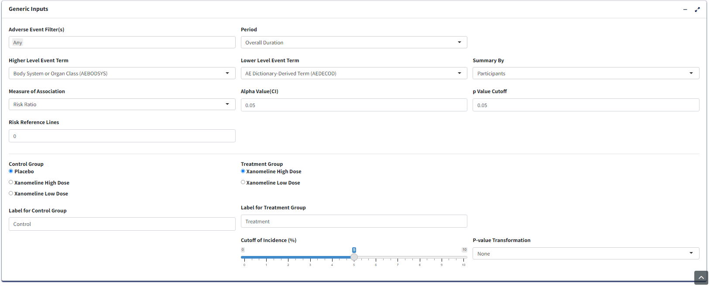
Graph Output:
- Click
Process Report Inputbutton and switch toGraph Outputtab to generate the graph.
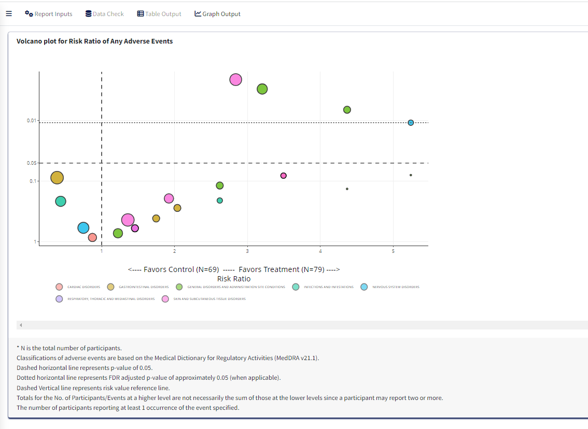
Note: Before proceeding to this section, it is
highly recommended to review sections 1.1 Data Import and
1.1.1 Default CDISC data for further details about giving
report inputs.
2.1.2 Forest Plot
This section pertains to creating Forest Plot of Adverse Events using
the carver application. The required input ADaM data for
this is an ADAE dataset.
Upon loading ADAE data and clicking the Report Inputs
tab, select Report Type as Figure and Report Name as
Forest Plot
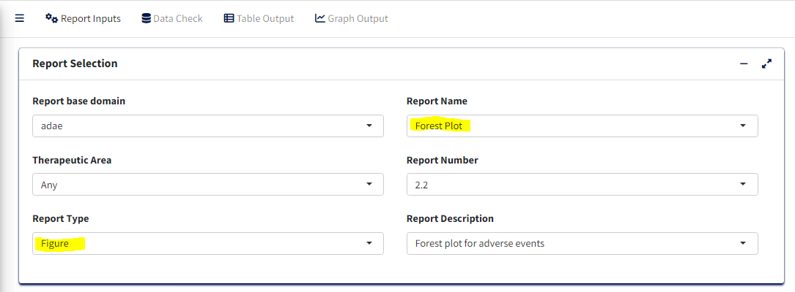
Treatment/Population
Required
- Under Treatment and Population Selection, select appropriate
Treatment Variable:
Treatment Variable determines grouping of points in the scatter plot section as well as treatment pairs in the risk forest section.
- Select appropriate
Treatment Sort Variablewhich will give the order for sorting Treatment variable
- To subset entire data based on available population flags, select
Population Filter. eg. Overall, Safety (SAFFL) etc
Data Pre-processing/Preparation
Optional - Can use defaults
-
Analysis Subset Conditionis the filter condition for the data to get counts of participants/events for each treatment.
-
Denominator Subset Conditionis the filter condition for the data to calculate percentages of participants/events for each treatment.
-
Adverse Event Filter(s), select which adverse events are to be filtered for analysis from the list available in the data.
-
Perioddrop-down to filter the required time period alone select ‘Overall Period’ to take entire data or ‘Other’ to specify the residual period (in days) to cut off.
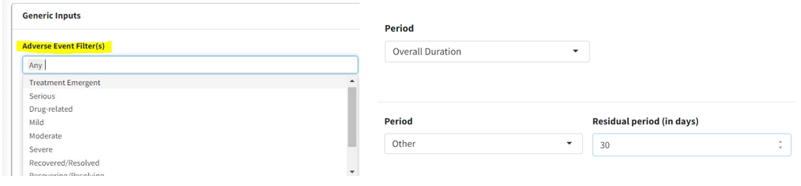
-
Summary Byto select either ‘Patients’ or ‘Events’ which determines how counts are calculated. -
Lower Level Event Term- Variable which gives the list of adverse event terms to be analysed and displayed in the plot
-
Higher Level Event Term- Variable that is used for grouping Lower Level Term, its values will be reflected in the Hover information for each term.
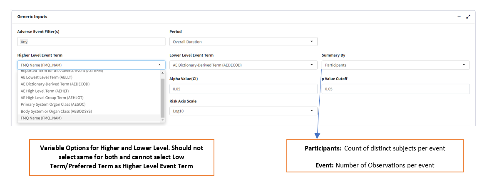
Statistical Analysis
-
Measure of Association- which statistic to calculate, ‘Risk Difference’ or ‘Risk Ratio’
-
Alpha Value(CI)- Give the alpha value to determine Confidence Interval. eg. 0.05 –> 95% CI
-
p Value Cutoff- The p-value below which to consider the any difference in % as statistically significant.
-
Risk Reference Lines- X axis intercept value to draw a vertical reference line in pair-wise risk plot.
-
Risk Axis Scale- How to transform risk axis to be plotted - log or identity (values as is) scales
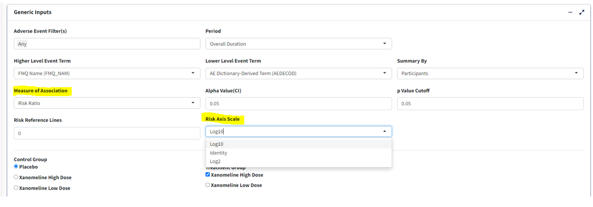
-
Control Group- Select treatment value within Treatment Variable to use as control for analysis
-
Treatment Group- Select treatment value(s) to perform pair-wise analysis against Control. Selecting multiple treatments will result in displaying multiple pairs, eg. Control-Treatment1 and Control-Treatment2 pairs in this case.
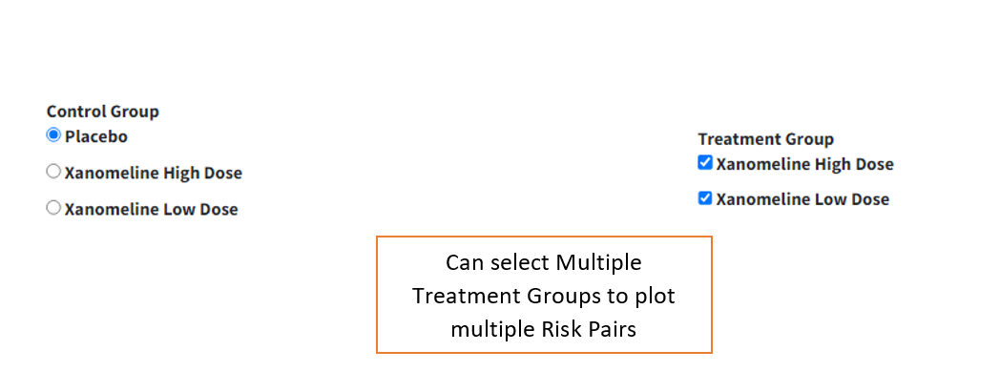
Graphical Display Options
-
Cutoff Incidence- Slide to the minimum % incidence a term should have (either in control or treatment group) to be displayed in the graph. Those with lower values will be removed.
-
p-value Transformation- Transform p-values displayed in graph for each term - None or log transform.
-
Sorting Option- Order in which to sort the Adverse Event terms in plot - Ascending, Descending (usingSorting Variable) or Alphabetical.
-
Sorting Variable- Which parameter/measure should be used to sort the terms in the plot in order ofSorting Option
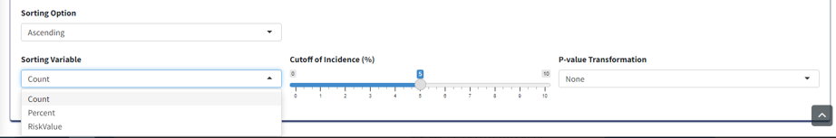
Graph Output
For selected options, visualize Forest Plot in Graph Output tab. Note that the color legend identifies the risk pairs in forest graph as well as p-value columns. In the incidence scatterplot, certain points are also depicted with larger green and red points which denotes a statistically significant (per p value cutoff) lower or higher incidence % respectively, for the treatment group vs control.
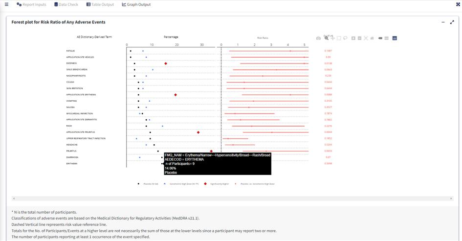
2.2 Event Analysis
Note: Before proceeding to this section, it is
highly recommended to review sections 1.1 Data Import and
1.1.1 Default CDISC data for further details about giving
report inputs.
This document details the steps for creating Event Analysis Plot using A&R application which is a graph report. The required input ADaM data for this is an ADAE dataset.
2.2.1 Report Inputs in App
Upon loading/selecting ADAE data
- Report Type as Figure and Report Name as
Event Analysis for the graph
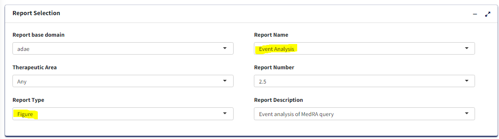
Treatment/Population
Required
Under Treatment and Population Selection, select appropriate
Treatment Variable:
For table, Treatment Variable determines the columns and for Figure, determines how to differentiate groups by color.Select appropriate
Treatment Sort Variablewhich will give the order for sorting Treatment variable.To subset entire data based on population flags, select
Population Filter. eg. Overall, Safety (SAFFL).
Processing Data:
- Add or Edit the default
Analysis Subset ConditionandDenominator Subset Conditionto filter input data (for calculating categorical counts alone or for entire data respectively)
Select
Adverse Event Filter(s)- To filter input dataSelect
Period- To generate the figure by eitherOverall DurationorOther.Select
Higher Level Event Term- This variable will help to generate the figure by AEBODSYS or FMQ Name etc., It shows the main bar chart of the percentages of subjects with at least one AE, by AEBODSYS or FMQ Name etc., and treament group.Select
Lower Level Event Term- This variable will help to generate the figure by AEDECOD or AELLT etc., It shows the main bar chart of the percentages of subjects with at least one AE, by AEDECOD or AELLT etc., and treatment group.Select
Reference Line (%)- Reference lines show how the data in a chart compares to a reference value. This is free text column where you can enter any number as reference value.
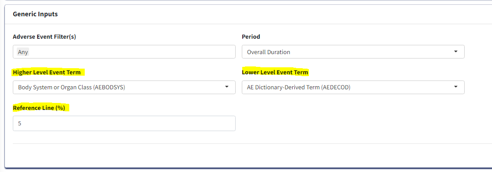
Graph Output:
Click
Process Report Inputbutton and switch toGraph Outputtab to update the inputs below and generate the graph.Select
Event Higher Classification- This is related to theHigher Level Event Termvariable. It creates a drop down of the variable values selected in theHigher Level Event Term.Select
Event Term- This is related to theLower Level Event Termvariable. It creates a drop down of the variable values selected in theLower Level Event Term.
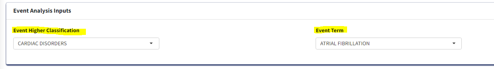
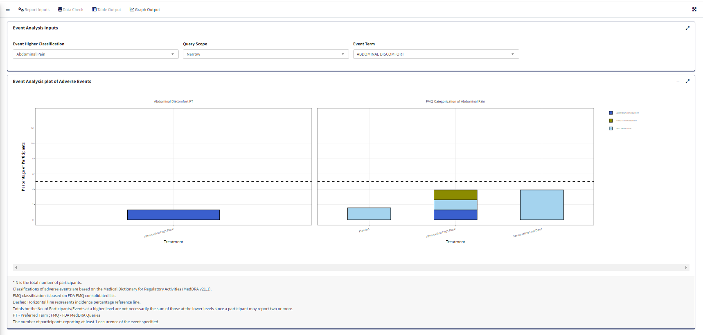
2.3 adae_r001 report
Note: Before proceeding to this section, it is
highly recommended to review sections 1.1 Data Import and
1.1.1 Default CDISC data for further details about giving
report inputs.
This document pertains to creating a Summary table of Adverse Events
i.e adae_r001 report using the carver application. The
required input ADaM data for this is an ADAE dataset.
2.3.1 Report Inputs in App
Upon loading ADAE data and clicking the Report Inputs
tab, select Report Type as Table and Report Name as
adae_r001
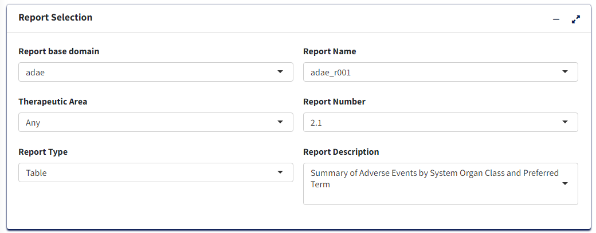
Treatment/Population
Required
- Under Treatment and Population Selection, select appropriate
Treatment Variable:
This groups the data treatment-wise and each treatment will reflect in the columns of the table.
- Select appropriate
Treatment Sort Variablewhich will give the order for sorting Treatment variable
- To subset entire data based on available population flags, select
Population Filter. eg. Overall, Safety (SAFFL) etc
Data Pre-processing/Preparation
Optional - Can use defaults
Analysis Subset Conditionis the filter condition for the data to get counts of participants/events for each treatment.Denominator Subset Conditionis the filter condition for the data to calculate percentages of participants/events for each treatment.Percentage Denominator- What denominator to use to calculate % of each terms for the table? ‘Treatment’ - within each treatment group and ‘Total’ - within variable total. IfCalculate Risk= Y, then this is fixed as ‘Treatment’ in order to calculate Risk Statistic.-
Select Y/N for:
Treatment Big N- To append to Treatment column names the total count of each group in the format (N = count) or not.Total Treatment- To create an extra column for total of all treatment groups/make it available for pair-wise selection in case ofCalculate Risk= Y.Add Missing Grouping Variable?- Whether empty/NA values of grouping (Higher Level Event Term) variable are to be included or not.-
Calculate Risk- determines the type of table:- If ‘N’, then all Treatments are displayed with Counts and % of the
Adverse Event terms for each, in the table.
- If ‘Y’, then user selects a single Treatment Pair to display Counts and % for as well as Risk Difference or Risk Ratio for the pair.
- If ‘N’, then all Treatments are displayed with Counts and % of the
Adverse Event terms for each, in the table.
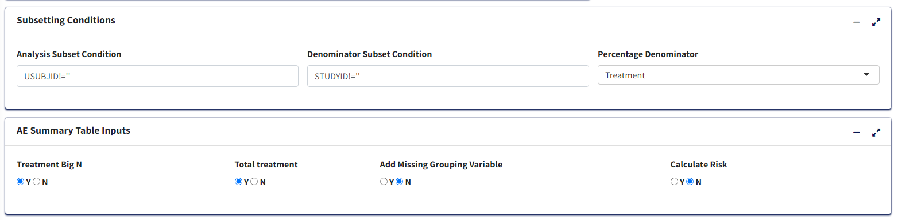
-
Adverse Event Filter(s), select which adverse events are to be filtered for analysis from the list available in the data.
-
Perioddrop-down to filter the required time period alone select ‘Overall Period’ to take entire data or ‘Other’ to specify the residual period (in days) to cut off.
-
Summary Byto select either ‘Participants’ or ‘Events’ which determines how counts are calculated. -
Lower Level Event Term- Variable which gives the list of adverse event terms to be analysed and displayed in the table.
-
Higher Level Event Term- Variable that is used for grouping Lower Level Term, its values in the table will divide the Lower Level Event Term variable into groups, with the Higher Level terms displayed in bold.
For table with Risk - if Calculate Risk =
‘Y’:
-
Measure of Association- which statistic to calculate, ‘Risk Difference’ or ‘Risk Ratio’
-
Alpha Value(CI)- Give the alpha value to determine Confidence Interval. eg. 0.05 –> 95% CI
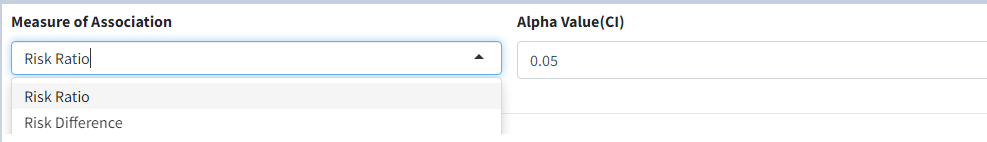
-
Control Group- Select treatment value within Treatment Variable to use as Control for analysis
-
Treatment Group- Select treatment value to perform pair-wise analysis against Control.
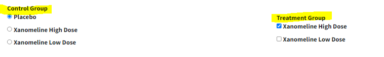
Display Options
-
Cutoff Incidence- Slide to the minimum % incidence a term should have (in any of the selected treatment groups) to be displayed in the table Those with lower values will be removed.
-
Sorting Option- Order in which to sort the Adverse Event terms in plot - Ascending, Descending (usingSorting Variable) or Alphabetical.
-
Sorting Variable- Which parameter/measure should be used to sort the terms in the plot in order ofSorting Option
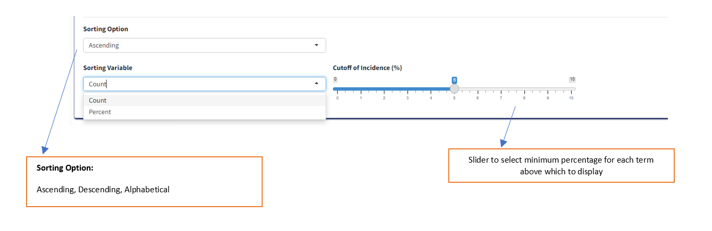
Table Output:
After selecting options, click ‘Process Report Input’ to view the table in Table Output tab.
Table with Risk Statistic
Sorted in Ascending Order of Count
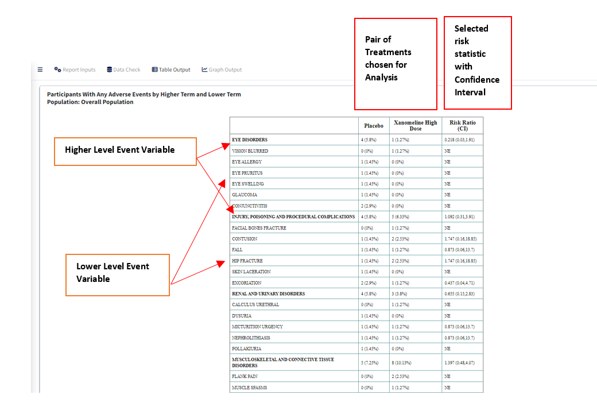
Table without Risk Statistic
Sorted in Descending Order of Count
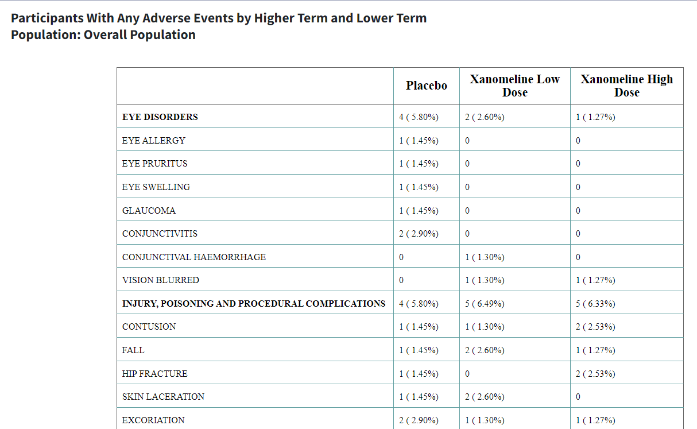
3. Save Reports
All the tables and graphs generated can be saved outside of the application. After an output is generated, below ‘Process Report Input’ button you will see ‘Save’.
Table can be saved in 3 formats wherease Figure in 5 formats. HTML will contain the plot as an interactive widget.
After selecting a format and Table/Figure, click the ‘Save’ button and you will be able to download the selected report into a local path. In future this will expand to save in network locations.
4. Listings and Patient Profile (For Adverse Events figures only)
The 3 Adverse Events Figure reports - Forest Plot, Volcano Plot and
Event Analysis - have an added feature of being able to view the listing
and relevant patient information from the main plot.
Clicking on a point or bar of interest in any of the 3 plots will result
in creation of a listing of all participants in the data with the
selected Event Classification and Treatment group with relevant info
such as Outcomes, Severity, Event Start and End Dates etc. This is
displayed as a table below the plot.
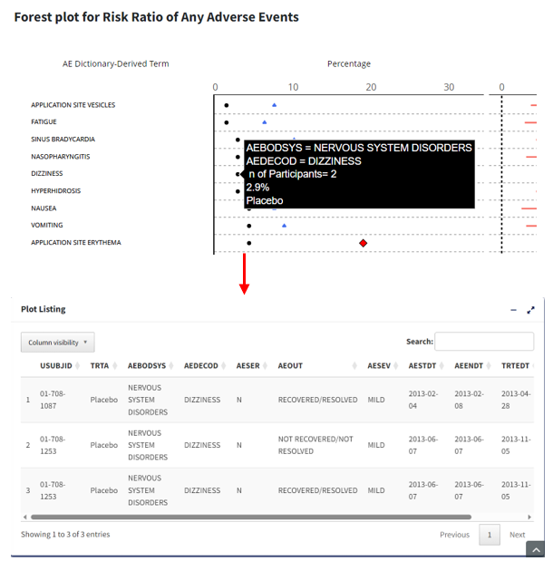
Further, clicking on any one of the rows in the listing results in
creation of a figure (interval plot) for each participant which
illustrates the start, end date and interval during which the selected
patient experienced any adverse events.
Additionally, if CM or ADCM data is loaded in
the app, the above-mentioned graph overlays another figure displaying
similar intervals for when the participant was on concomitant
medications. This figure is displayed below the listing.
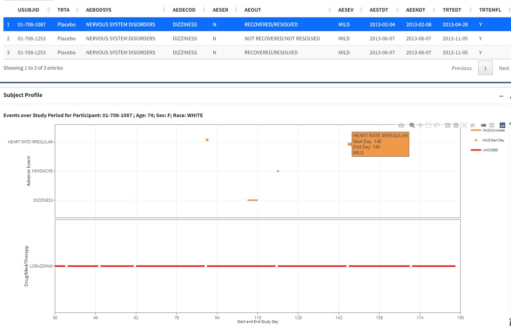
5. Usage Notes and Common Errors
When subset conditions, population or adverse event filters are selected, check that there is any data within those filters. If not, reports may fail or display a message that there is no data.
For running an analysis with pooled data, user has the option to give STUDYID as Treatment Variable.
If the app fails at some point, the ‘Logs’ in R Studio Connect or R Studio can also give a clue about the source of the error.
6. App Development Details
R version 4.1.0 Packages: cowplot : 1.1.1; data.table : 1.14.2; DT : 0.26; epitools : 0.5-10.1; flextable : 0.8.2; ftExtra : 0.4.0; ggstance : 0.3.5; haven : 2.5.1; htmltools : 0.5.3; officer : 0.4.4; plotly : 4.10.0; RCurl : 1.98-1.8; readxl : 1.4.1; scales : 1.2.1; shiny : 1.7.2; shinycssloaders : 1.0.0; bs4dash : 2.3.0; shinyjs : 2.1.0; shinyWidgets : 0.7.4; tidyverse : 1.3.2; tools : 4.1.0